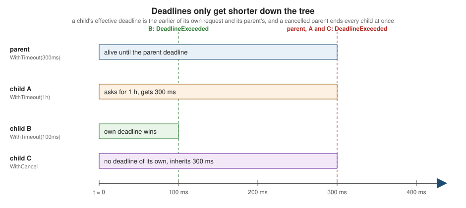
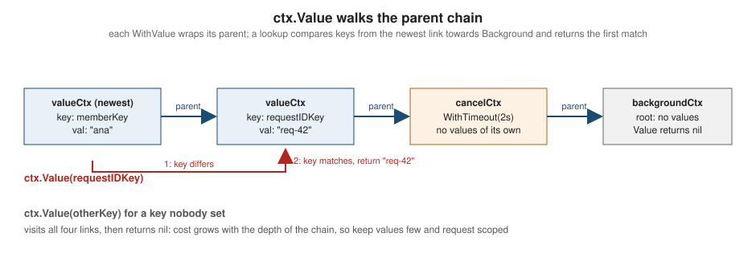

Context
|
This content was generated with the assistance of AI and should be verified against the official documentation before being relied on in production. |
This page is written against Go 1.27 (go1.27.2), checked on 2026-10-18; every go.mod shown has the line go 1.27.
A context.Context is how Go code says "stop working on this, the answer is no longer needed" across goroutines,
packages and process boundaries, and how it carries a deadline and a handful of request-scoped values along the same
path. Almost every blocking API in the standard library (net/http, database/sql, os/exec, net, log/slog)
accepts one, and almost every server written in Go passes one through every layer. This page covers the whole
package, how to honour cancellation in your own code, where contexts belong in an API, and how to test code that
uses them.
It builds on Goroutines and the Scheduler,
Channels and Select and
Concurrency Patterns (done channels, pipelines and worker
pools are the pre-context ancestors of everything here). The related pages are
Sync and Atomics,
Time and Timers,
Error Handling (wrapping and errors.Is),
net/http Clients and Servers,
database/sql and
Testing. Other languages solve the same problem differently: see
CancellationToken in C# async and await,
Kotlin coroutine context and
cancellation and cancellation by dropping a future in
Rust async/await and futures.
Every example was compiled, vetted with go vet and run with Go 1.27.2; the output shown is the real output (the
compiler and vet messages are likewise copied from real runs). Examples whose output would otherwise depend on
timing wait on channels instead of sleeping, or use timeouts with large safety margins, and print only facts that do
not vary between runs. The go.mod of the example module is:
module example.com/shelf
go 1.27Why context exists
A server request fans out: the HTTP handler calls the catalogue, which queries the database, which asks a cache, and
each step may start goroutines. When the client disconnects, when the request has used up its time budget or when the
process receives SIGTERM, every one of those goroutines should stop as soon as possible and release its resources.
Before Go 1.7 every project invented its own mechanism, usually a done channel passed to every function (the
pattern in Concurrency Patterns). Google’s internal
context package standardised it, was published as golang.org/x/net/context and moved into the standard library
in Go 1.7 (2016), and the rest of the standard library adopted it over the following releases.
A context carries exactly three things, and nothing else belongs in it:
-
a cancellation signal: a channel that is closed when the work should stop, and an error that says why;
-
an optional deadline: the point in time after which the work is pointless;
-
a small set of request-scoped values, such as a request ID, that cross API boundaries without being parameters.
Contexts are immutable. Every With… function returns a new context that wraps a parent, so the contexts of one
program form a tree rooted in a context that is never cancelled. Cancelling a node cancels the whole subtree below
it and nothing above it. The blog post Go Concurrency Patterns: Context introduced the
package, and Contexts and structs explains the rules for where a context
may live.
The Context interface
type Context interface {
Deadline() (deadline time.Time, ok bool)
Done() <-chan struct{}
Err() error
Value(key any) any
}Source: context: type Context
(This is the declaration from the package, shown as a fragment; it is not a runnable program.)
| Method | Meaning |
|---|---|
|
The time at which the context is cancelled automatically, and |
|
A channel that is closed when the context is cancelled or its deadline passes. It may return |
|
|
|
The value associated with |
A Context is safe for simultaneous use by multiple goroutines. The two error values are variables, so compare with
errors.Is, never with == on a wrapped error. DeadlineExceeded also implements Timeout() bool (returning
true) and Temporary() bool, which is why code written against net.Error treats a deadline as a timeout, while
Canceled has no Timeout method:
package main
import (
"context"
"errors"
"fmt"
)
func main() {
bg := context.Background()
todo := context.TODO()
fmt.Println(bg, todo)
fmt.Println(bg.Err(), bg.Done() == nil)
_, hasDeadline := bg.Deadline()
fmt.Println("deadline:", hasDeadline)
ctx, cancel := context.WithCancel(bg)
fmt.Println(ctx)
fmt.Println("before cancel:", ctx.Err())
cancel()
<-ctx.Done()
fmt.Println("after cancel: ", ctx.Err())
fmt.Println(errors.Is(ctx.Err(), context.Canceled))
fmt.Printf("%v | %v\n", context.Canceled, context.DeadlineExceeded)
var te interface{ Timeout() bool }
fmt.Println(errors.As(context.DeadlineExceeded, &te) && te.Timeout())
fmt.Println(errors.As(context.Canceled, &te))
}context.Background context.TODO
<nil> true
deadline: false
context.Background.WithCancel
before cancel: <nil>
after cancel: context canceled
true
context canceled | context deadline exceeded
true
falseNotice how the contexts print their own ancestry (context.Background.WithCancel): the String method of the
standard contexts is a debugging aid and is worth using in logs while you learn the tree.
The package has a small API. Everything the package exports is in this table:
| Name | Purpose | Since |
|---|---|---|
|
Root contexts that are never cancelled and carry no values or deadline. |
1.7 |
|
Derived context plus a |
1.7 |
|
Derived context that cancels itself after |
1.7 |
|
Derived context that carries one key and value. |
1.7 |
|
Cancel with an arbitrary error ( |
1.20 |
|
Derived context that keeps the values but is never cancelled and has no deadline. |
1.21 |
|
Run |
1.21 |
|
Like the timeout constructors, with a custom cause when the deadline passes. |
1.21 |
|
The two |
1.7 |
Root contexts: Background and TODO
Every tree needs a root. context.Background() is the empty, never-cancelled context. Use it in main, in init,
in tests that do not need t.Context() and at the top of an incoming request when no better parent exists (servers
get their contexts from the framework, see below). context.TODO() is identical in
behaviour, but documents that the caller has not decided yet which context to use, for example while you are still
threading a context parameter through a call chain, or when the surrounding function does not accept one yet.
Linters and humans can search for TODO() to find the unfinished plumbing.
Never pass a nil context, even where a function appears to tolerate it: callers that do cannot be told apart from
bugs, and some implementations call methods on the context immediately (the panic is shown in
Panics, vet reports and compile errors). If you do not have a context, pass context.TODO().
Staticcheck check SA1012 reports a literal nil passed as a context.
Source: context: Background and TODO
Derived contexts form a tree
Each With… call attaches a new node below its parent. A node is cancelled when its own cancel function runs, when
its own deadline passes, or when any ancestor is cancelled. Cancellation never flows upward:
never cancelled"] REQ["WithTimeout 30s
HTTP request"] IMP["WithCancel
import job"] DB["WithTimeout 2s
one query"] VAL["WithValue
request ID"] PAGE["WithCancel
page fetch"] OTHER["WithCancel
background sweeper"] BG --> REQ BG --> OTHER REQ --> VAL VAL --> IMP VAL --> DB IMP --> PAGE classDef cancelled fill:#fbe3e1,stroke:#b3261e,color:#222 class REQ,VAL,IMP,DB,PAGE cancelled
In the diagram the request context expired, so the request node, its value node, the import job, the query and the
page fetch are all done at the same moment (the shaded nodes), whereas the sweeper hanging off Background is
untouched. This is the guarantee that makes defer cancel() cheap and safe: cancelling a node can only affect the
work you started below it.
package main
import (
"context"
"fmt"
"sync"
)
// watch blocks until ctx is cancelled and then reports it.
func watch(name string, ctx context.Context, wg *sync.WaitGroup, out chan<- string) {
defer wg.Done()
<-ctx.Done()
out <- fmt.Sprintf("%s: %v", name, ctx.Err())
}
func main() {
root := context.Background()
catalogCtx, cancelCatalog := context.WithCancel(root)
defer cancelCatalog()
importCtx, cancelImport := context.WithCancel(catalogCtx)
defer cancelImport()
pageCtx, cancelPage := context.WithCancel(importCtx)
defer cancelPage()
otherCtx, cancelOther := context.WithCancel(root)
defer cancelOther()
var wg sync.WaitGroup
out := make(chan string, 4)
wg.Add(2)
go watch("import", importCtx, &wg, out)
go watch("page", pageCtx, &wg, out)
cancelCatalog() // cancels catalog, import and page, but not other
wg.Wait()
close(out)
got := map[string]bool{}
for s := range out {
got[s] = true
}
fmt.Println(got["import: context canceled"], got["page: context canceled"])
fmt.Println("catalog:", catalogCtx.Err())
fmt.Println("other: ", otherCtx.Err())
// Cancelling a child never affects its parent.
parent, cancelParent := context.WithCancel(root)
defer cancelParent()
child, cancelChild := context.WithCancel(parent)
cancelChild()
fmt.Println("child:", child.Err(), "| parent:", parent.Err())
}true true
catalog: context canceled
other: <nil>
child: context canceled | parent: <nil>Source: context: WithCancel
How this works internally matters for performance and for a few surprises. WithCancel, WithTimeout and
WithDeadline create a cancelCtx that registers itself in its nearest cancellable ancestor’s set of children (a
map guarded by a mutex), so cancelling the ancestor walks that set once and closes each child’s Done channel
lazily, only when someone asks for it. WithValue creates a node that adds no cancellation machinery at all.
If the parent is a context from your own type (a custom implementation of the interface), the package may have to start a
goroutine to propagate cancellation, which is one reason to prefer the standard constructors, and to wrap a custom
context rather than reimplement the tree.
Cancellation: WithCancel and the cancel function
WithCancel returns the derived context and a CancelFunc. The rules for the cancel function are strict, and
the vet analyzer lostcancel enforces the most important one:
-
Always call it, even when the work finishes normally. Calling
cancelreleases the child’s registration in its parent and stops its timer; without it the child (and, forWithTimeout, its timer) stays alive until the parent is cancelled, which for aBackgroundparent is never. The idiom isdefer cancel()on the line right after the call. -
It is idempotent and safe to call from multiple goroutines: the first call wins, later calls do nothing.
-
It does not wait for the work to stop. Cancellation is a request, not a kill; see Respecting cancellation in your own code.
-
Cancelling a child does not touch the parent, siblings or cousins.
When the cancel function is not used on all paths, vet says so:
package main
import (
"context"
"fmt"
"time"
)
func lookup(ctx context.Context, fast bool) error {
ctx, cancel := context.WithTimeout(ctx, time.Second)
if fast {
cancel()
return nil
}
fmt.Println("looking up", ctx.Err())
return nil
}
func main() {
fmt.Println(lookup(context.Background(), false))
}lostcancel/main.go:10:2: the cancel function is not used on all paths (possible context leak)
lostcancel/main.go:16:2: this return statement may be reached without using the cancel var defined on line 10Source: lostcancel analyzer
If the cancel function is not used at all, the compiler itself rejects the program, because it is an unused local variable:
package main
import (
"context"
"fmt"
)
func main() {
ctx, cancel := context.WithCancel(context.Background())
fmt.Println(ctx.Err())
}# example.com/shelf/unusedcancel
unusedcancel/main.go:9:7: declared and not used: cancelAssigning the function to _ silences the compiler but not lostcancel, which also reports a discarded cancel function ("the cancel function returned by context.WithCancel should be called, not discarded, to avoid a context leak").
WithCancelCause and Cause (Go 1.20)
Err() can only ever say "canceled" or "deadline exceeded", which is rarely enough for diagnosis: why was the
import cancelled? WithCancelCause returns a CancelCauseFunc that takes an error, and context.Cause(ctx)
returns it. Only the first call records a cause; later calls are ignored. Err() is unchanged (it still returns
context.Canceled), so existing code that tests ctx.Err() keeps working, and Cause of a context that was never
given a cause falls back to Err(). Children report the cause of the ancestor that cancelled them.
package main
import (
"context"
"errors"
"fmt"
)
var errQuotaExceeded = errors.New("import quota exceeded")
func main() {
ctx, cancel := context.WithCancelCause(context.Background())
child, cancelChild := context.WithCancel(ctx)
defer cancelChild()
cancel(errQuotaExceeded)
cancel(errors.New("ignored: only the first cause is kept"))
fmt.Println("Err: ", ctx.Err())
fmt.Println("Cause:", context.Cause(ctx))
fmt.Println("child Err: ", child.Err())
fmt.Println("child Cause:", context.Cause(child))
fmt.Println(errors.Is(context.Cause(child), errQuotaExceeded))
plain, cancelPlain := context.WithCancel(context.Background())
cancelPlain()
fmt.Println("plain Cause:", context.Cause(plain))
fmt.Println("live Cause: ", context.Cause(context.Background()))
// cancel(nil) records context.Canceled as the cause.
c2, cancel2 := context.WithCancelCause(context.Background())
cancel2(nil)
fmt.Println(context.Cause(c2))
}Err: context canceled
Cause: import quota exceeded
child Err: context canceled
child Cause: import quota exceeded
true
plain Cause: context canceled
live Cause: <nil>
context canceledSource: context: WithCancelCause
Use Cause at the point where you report or log the failure, and use ctx.Err() (or errors.Is(err, context.Canceled)) where you decide whether to retry. The cause is for humans and for typed errors you want to
recover with errors.As; it never changes which of the two sentinel errors the standard library returns.
Deadlines and timeouts
WithTimeout(parent, d) is shorthand for WithDeadline(parent, time.Now().Add(d)). The deadline is an absolute time
(taken from the monotonic clock when created with WithTimeout), so a deadline already in the past produces a
context that is cancelled before it is returned. A derived context can only make the deadline earlier: if the
parent expires sooner, the child inherits the parent’s deadline, and child.Deadline() reports the parent’s time.
package main
import (
"context"
"errors"
"fmt"
"time"
)
var errSlowStore = errors.New("store did not answer within the budget")
func main() {
parent, cancel := context.WithTimeout(context.Background(), time.Hour)
defer cancel()
// A child can only shorten, never extend, the parent's deadline.
short, cancelShort := context.WithTimeout(parent, 50*time.Millisecond)
defer cancelShort()
long, cancelLong := context.WithTimeout(short, time.Hour)
defer cancelLong()
d1, _ := parent.Deadline()
d2, _ := short.Deadline()
d3, _ := long.Deadline()
fmt.Println("short earlier than parent:", d2.Before(d1))
fmt.Println("long keeps short's deadline:", d3.Equal(d2))
<-long.Done()
fmt.Println(long.Err(), errors.Is(long.Err(), context.DeadlineExceeded))
fmt.Println("parent:", parent.Err())
// WithTimeoutCause records why the deadline was set.
c, cancelC := context.WithTimeoutCause(context.Background(), 20*time.Millisecond, errSlowStore)
defer cancelC()
<-c.Done()
fmt.Println(c.Err(), "/", context.Cause(c))
// WithDeadline takes an absolute time; a deadline in the past cancels at once.
past, cancelPast := context.WithDeadline(context.Background(), time.Now().Add(-time.Second))
defer cancelPast()
fmt.Println(past.Err())
// Calling cancel releases the timer early and leaves Canceled as the error.
t, cancelT := context.WithTimeout(context.Background(), time.Hour)
cancelT()
fmt.Println(t.Err())
}short earlier than parent: true
long keeps short's deadline: true
context deadline exceeded true
parent: <nil>
context deadline exceeded / store did not answer within the budget
context deadline exceeded
context canceledSource: context: WithTimeout

Practical consequences:
-
Budgets nest. An overall request budget of 30 seconds with a 2-second budget per database call is expressed by deriving the call context from the request context; the call can never outlive the request.
-
Read the remaining time with
ctx.Deadline()to decide whether it is worth starting expensive work, or to set a socket deadline (conn.SetDeadline(deadline)) in code that predates context. -
Distinguish the two errors.
context.DeadlineExceededusually deserves a retry or a 504;context.Canceledusually means the caller gave up, and logging it as an error floods the logs when clients disconnect. -
WithTimeoutCauseandWithDeadlineCause(Go 1.21) set the cause reported byCausewhen the timer fires, so "context deadline exceeded" can become "store did not answer within the budget".Err()is stillDeadlineExceeded, as the last lines of the example above show. Callingcancelearly reports the plainCancelederror instead. -
time.Afterandtime.NewTimerexpress "wait this long" inside one function; contexts express "the caller decided this long" across a call tree. Use a context deadline for the second and a timer for the first, see Time and Timers.
Go 1.23 changed the standard timer implementation (unreferenced timers are garbage-collected even if not stopped, and
timer channels are unbuffered), which makes time.After inside a select less costly than it was, but not free in a
hot loop; a time.NewTimer that you Stop remains the precise tool.
AfterFunc and WithoutCancel (Go 1.21)
context.AfterFunc(ctx, f) arranges for f to be called in its own goroutine after ctx is done (cancelled or
timed out). It returns a stop function: calling stop before f has started prevents the call and returns
true; if f already started (or stop was already called) it returns false, and it does not wait for f
to finish, so use a sync.WaitGroup or channel when you must. Several AfterFunc calls on one context are
independent. The classic use is to connect cancellation to APIs that have no context parameter: waking a
sync.Cond, closing a connection to abort a blocking Read, or merging two contexts (the package documentation
shows all three).
context.WithoutCancel(parent) returns a copy of the parent that keeps its values but is never cancelled, has no
deadline and Err() == nil. It is the tool for work that must outlive the request that started it, such as writing an
audit record after the client has disconnected, or running a cleanup that needs the request’s trace ID. It is also
deliberately a little dangerous: the detached work now has no upper bound, so give it a new timeout of its own.
package main
import (
"context"
"fmt"
"sync"
"time"
)
func main() {
ctx, cancel := context.WithCancel(context.Background())
var wg sync.WaitGroup
wg.Add(1)
// AfterFunc runs f in its own goroutine once ctx is done.
stop := context.AfterFunc(ctx, func() {
defer wg.Done()
fmt.Println("cleanup after:", ctx.Err())
})
cancel()
wg.Wait()
fmt.Println("stop after run returns:", stop())
// stop prevents f from running when it is called first.
ctx2, cancel2 := context.WithCancel(context.Background())
stop2 := context.AfterFunc(ctx2, func() { fmt.Println("never printed") })
fmt.Println("stopped before cancel:", stop2())
cancel2()
time.Sleep(50 * time.Millisecond)
// WithoutCancel keeps values but drops cancellation and the deadline.
type key struct{}
parent, cancelP := context.WithTimeout(context.WithValue(context.Background(), key{}, "req-7"), time.Millisecond)
defer cancelP()
<-parent.Done()
detached := context.WithoutCancel(parent)
_, hasDeadline := detached.Deadline()
fmt.Println("parent:", parent.Err())
fmt.Println("detached:", detached.Err(), detached.Done() == nil, hasDeadline, detached.Value(key{}))
}cleanup after: context canceled
stop after run returns: false
stopped before cancel: true
parent: context deadline exceeded
detached: <nil> true false req-7Source: context: AfterFunc
The detached-audit pattern in a realistic shape, together with a first-error-wins fan-out written with only the
standard library and sync.WaitGroup.Go (Go 1.25), which starts a goroutine and does the Add/Done bookkeeping
for you:
package main
import (
"context"
"errors"
"fmt"
"sync"
"time"
)
type key struct{}
// audit must finish even if the request that triggered it is cancelled,
// so it detaches from the request's cancellation but keeps its values.
func audit(ctx context.Context, wg *sync.WaitGroup, action string) {
detached := context.WithoutCancel(ctx)
wg.Go(func() {
bounded, cancel := context.WithTimeout(detached, 2*time.Second)
defer cancel()
select {
case <-time.After(30 * time.Millisecond): // the slow write
fmt.Printf("audited %q for %v (request ctx: %v)\n", action, bounded.Value(key{}), ctx.Err())
case <-bounded.Done():
fmt.Println("audit lost:", bounded.Err())
}
})
}
func main() {
req, cancel := context.WithCancel(context.WithValue(context.Background(), key{}, "req-9"))
var wg sync.WaitGroup
audit(req, &wg, "lend 9780441172719")
cancel() // the client disconnects right away
wg.Wait()
// First-error-wins fan-out using only the standard library.
ctx, stop := context.WithCancelCause(context.Background())
defer stop(nil)
var mu sync.Mutex
var failures []string
var group sync.WaitGroup
for i, isbn := range []string{"9780441172719", "bad-isbn", "9780140449136"} {
group.Go(func() {
if isbn == "bad-isbn" {
stop(fmt.Errorf("import item %d: %w", i, errors.New("invalid ISBN")))
return
}
select {
case <-time.After(10 * time.Second):
case <-ctx.Done():
mu.Lock()
failures = append(failures, isbn)
mu.Unlock()
}
})
}
group.Wait()
fmt.Println("cause:", context.Cause(ctx))
fmt.Println("abandoned items:", len(failures))
}audited "lend 9780441172719" for req-9 (request ctx: context canceled)
cause: import item 1: invalid ISBN
abandoned items: 2Source: sync: WaitGroup.Go
The audit write completes although its request context was cancelled; the fan-out stops the two healthy workers
the moment the third reports a bad ISBN, and Cause carries the reason. For production use the
golang.org/x/sync/errgroup package (see below) packages this pattern.
Respecting cancellation in your own code
A context only signals; it cannot stop a goroutine. The goroutine has to look. Three habits cover almost every case:
-
Every blocking channel operation in a goroutine that can be cancelled is a
selectthat also listens on<-ctx.Done(). A barech <- vor<-chthat nobody will ever complete is the classic goroutine leak. -
Long loops that never block poll
ctx.Err()(cheap, but not free) every so many iterations. -
Return the error, wrapped with context about where you stopped:
fmt.Errorf("checksum stopped at byte %d: %w", i, err). Do not swallow it and do not replace it with a new sentinel; callers test it witherrors.Is.
The producer below shows the first habit: its goroutine always ends, either because the data is exhausted or because the consumer cancelled. The consumer cancels after two books and `break`s.
package main
import (
"context"
"fmt"
)
type Book struct{ Title string }
// Books streams books from the source until it is exhausted or ctx is done.
// The goroutine always exits: either the source ends or ctx is cancelled.
func Books(ctx context.Context, titles []string) <-chan Book {
out := make(chan Book)
go func() {
defer close(out)
for _, t := range titles {
select {
case out <- Book{Title: t}:
case <-ctx.Done():
return
}
}
}()
return out
}
func main() {
ctx, cancel := context.WithCancel(context.Background())
defer cancel()
titles := []string{"Dune", "Emma", "Ulysses", "Hamlet", "Beloved"}
n := 0
for b := range Books(ctx, titles) {
n++
fmt.Println("got", b.Title)
if n == 2 {
cancel() // stop the producer; it releases its goroutine
break
}
}
fmt.Println("stopped after", n, "books:", ctx.Err())
}got Dune
got Emma
stopped after 2 books: context canceledCPU-bound code and sleeping are the two places where people forget. time.Sleep cannot be interrupted, so use a timer
in a select; and polling ctx.Err() on every iteration of a tight loop is more expensive than doing the work, so
poll every few hundred or thousand iterations:
package main
import (
"context"
"fmt"
"time"
)
// checksum models CPU-bound work: it polls ctx.Err every 1024 iterations
// instead of on every one, because the check is cheap but not free.
func checksum(ctx context.Context, data []byte) (uint32, error) {
var sum uint32
for i, b := range data {
if i%1024 == 0 {
if err := ctx.Err(); err != nil {
return 0, fmt.Errorf("checksum stopped at byte %d: %w", i, err)
}
}
sum = sum*31 + uint32(b)
}
return sum, nil
}
// pause waits for d or until ctx is done, unlike time.Sleep which cannot be interrupted.
func pause(ctx context.Context, d time.Duration) error {
t := time.NewTimer(d)
defer t.Stop()
select {
case <-t.C:
return nil
case <-ctx.Done():
return context.Cause(ctx)
}
}
func main() {
data := make([]byte, 1<<20)
ctx, cancel := context.WithCancel(context.Background())
sum, err := checksum(ctx, data)
fmt.Println(sum, err)
cancel()
_, err = checksum(ctx, data)
fmt.Println(err)
short, cancelShort := context.WithTimeout(context.Background(), 20*time.Millisecond)
defer cancelShort()
start := time.Now()
err = pause(short, time.Hour)
fmt.Println(err, time.Since(start) < 5*time.Second)
}0 <nil>
checksum stopped at byte 0: context canceled
context deadline exceeded trueSource: context: Context
The next example is the same idea at API level: the shelf Store interface takes a context in every method that can
block, as the first parameter, named ctx, and the implementation checks it before doing work:
package main
import (
"context"
"errors"
"fmt"
)
type ISBN string
type Book struct {
ISBN ISBN
Title string
}
// Store is the shelf catalogue; every method that may block takes a Context
// as its first parameter, named ctx.
type Store interface {
Get(ctx context.Context, isbn ISBN) (Book, error)
Put(ctx context.Context, b Book) error
}
type memStore struct{ books map[ISBN]Book }
func (s *memStore) Get(ctx context.Context, isbn ISBN) (Book, error) {
if err := ctx.Err(); err != nil {
return Book{}, err
}
b, ok := s.books[isbn]
if !ok {
return Book{}, errors.New("not found")
}
return b, nil
}
func (s *memStore) Put(ctx context.Context, b Book) error {
if err := ctx.Err(); err != nil {
return err
}
s.books[b.ISBN] = b
return nil
}
func main() {
var st Store = &memStore{books: map[ISBN]Book{}}
ctx := context.Background()
fmt.Println(st.Put(ctx, Book{"9780441172719", "Dune"}))
b, err := st.Get(ctx, "9780441172719")
fmt.Println(b, err)
cctx, cancel := context.WithCancel(ctx)
cancel()
_, err = st.Get(cctx, "9780441172719")
fmt.Println(err)
}<nil>
{9780441172719 Dune} <nil>
context canceledGoroutine leaks
A goroutine blocked forever on a channel is never garbage-collected: it keeps its stack and everything it references
until the process exits. Contexts exist largely to prevent this. The first function below leaks one goroutine every
time a caller stops reading; the second ties the producer to a context. The program counts goroutines with
runtime.NumGoroutine and waits (with a generous five-second cap) for the count to settle, so its output does not
depend on scheduling:
package main
import (
"context"
"fmt"
"runtime"
"time"
)
// leaky starts a producer that blocks forever once the caller stops reading.
func leaky() <-chan int {
ch := make(chan int)
go func() {
for i := 0; ; i++ {
ch <- i
}
}()
return ch
}
// fixed ties the producer's lifetime to ctx.
func fixed(ctx context.Context) <-chan int {
ch := make(chan int)
go func() {
defer close(ch)
for i := 0; ; i++ {
select {
case ch <- i:
case <-ctx.Done():
return
}
}
}()
return ch
}
// settle waits until the goroutine count reaches want (or gives up).
func settle(want int) int {
deadline := time.Now().Add(5 * time.Second)
for runtime.NumGoroutine() != want && time.Now().Before(deadline) {
time.Sleep(5 * time.Millisecond)
}
return runtime.NumGoroutine()
}
func main() {
base := runtime.NumGoroutine()
ch := leaky()
<-ch
<-ch // the caller walks away after two values
fmt.Println("leaky: extra goroutines:", settle(base)-base)
ctx, cancel := context.WithCancel(context.Background())
ch2 := fixed(ctx)
<-ch2
<-ch2
cancel()
fmt.Println("fixed: extra goroutines:", settle(base+1)-base-1)
}leaky: extra goroutines: 1
fixed: extra goroutines: 0Source: runtime: NumGoroutine
In tests, leak checks are possible by comparing goroutine counts, as above. For running programs, Go 1.26 added an
experimental goroutineleak profile (enabled with GOEXPERIMENT=goroutineleakprofile) that reports goroutines
blocked on a channel, mutex or condition variable that nothing can ever unblock, and Go 1.27 made it generally
available in runtime/pprof and as the /debug/pprof/goroutineleak endpoint of net/http/pprof. See
Profiling, Tracing and Diagnostics.
Which APIs accept a context
Cancellation is cooperative, so it only reaches code that is written to listen. The table lists the standard-library
entry points; a function that is missing from it (a plain sync.Mutex.Lock, time.Sleep, bufio.Scanner.Scan,
a CPU loop) will not notice cancellation unless you add the checks above.
| API | What cancellation does |
|---|---|
|
Cancels the in-flight client request, including reading the response body. |
|
Cancelled when the client disconnects, the request is cancelled (HTTP/2) or the handler returns. |
|
Cancels the query and, for transactions, rolls back when the context is done. |
|
Aborts a connection attempt or DNS lookup. |
|
Kills the process (or runs |
|
Produces a context that is cancelled when a signal arrives. |
|
Passes the context to handlers so they can read values; it does not stop logging. |
|
Produces a context cancelled when the test ends (Go 1.24). |
|
Groups and weighted semaphores that cancel or abandon waiting with a context. |
Passing contexts
The conventions are short and are enforced by review and by linters rather than by the compiler:
-
Context is the first parameter and is named
ctx.func (s *Store) Get(ctx context.Context, isbn ISBN) (Book, error). Thereviveandstaticchecklinters check the position;go vetdoes not. -
Do not store a Context in a struct. A context describes one call or one request, and a stored context makes the lifetime of an object depend on a value chosen elsewhere, so cancellation becomes invisible and a long-lived object ends up holding a dead or too-short-lived context. Pass it to each method that needs it. The blog post Contexts and structs explains the rule and its narrow exceptions: a type that really is the single-use representation of one request (the standard library’s
http.Requestis the example) may carry one, and an older API that cannot change its signatures may need to. For new code, take the parameter. -
Do not pass
nil. Usecontext.TODO()if you have to. -
Use context values only for request-scoped data that crosses API boundaries, never for optional function parameters, handles, configuration or dependencies.
-
The same context may be passed to many goroutines. It is immutable and safe for concurrent use.
-
Do not wrap
ctx.Err()in your own sentinel if you want callers to see cancellation; wrap with%w.
Adding a ctx to an interface method is a breaking change, so decide early: the cost of an unused parameter is
nothing, and the cost of retrofitting it into a published interface is a new major version. That is why the
Store of the running shelf scenario takes a context on every I/O method from the first release.
Panics, vet reports and compile errors
The panics happen in the arguments, not in cancellation: the package rejects programs that cannot work.
package main
import (
"context"
"fmt"
)
func try(name string, f func()) {
defer func() { fmt.Printf("%s: %v\n", name, recover()) }()
f()
}
func main() {
try("nil parent", func() {
_, cancel := context.WithCancel(nil)
cancel()
})
try("nil key", func() { _ = context.WithValue(context.Background(), nil, "x") })
try("slice key", func() { _ = context.WithValue(context.Background(), []int{1}, "x") })
}nil parent: cannot create context from nil parent
nil key: nil key
slice key: key is not comparableSource: context: WithValue
The go vet analyzer that applies here is lostcancel (shown above), plus unusedresult for calls whose results are
dropped. Staticcheck adds SA1012 (a nil context) and
SA1029 (a built-in type such as string used as a WithValue key).
Context values
WithValue(parent, key, val) returns a node holding one key-value pair. ctx.Value(key) walks from the current node
toward the root and returns the first match, comparing keys with ==; the key must therefore be comparable, and a
nil or non-comparable key panics (see above). Because the lookup is a linear walk, every value you add makes every
Value call slower and every context a little harder to understand, so keep the number small.

The rules, in order of importance:
-
Use an unexported key type defined in the package that owns the value. A key of type
stringorintfrom two packages would collide silently; a key of an unexported type cannot even be written by other packages, so no collision is possible, as the third lookup in the example below shows. Anintconstant of a private type, or the emptystruct{}type, are the two common choices. -
Hide the key behind functions. The owning package exports a
ContextWith…/With…function to store and a…FromContext/…Fromfunction to read, so the key type and the type assertion stay private and callers never seeany. -
Store request-scoped data only: request and trace IDs, the authenticated principal, a deadline’s cause. Not database handles, loggers, configuration or optional parameters: those are visible dependencies, so pass them as arguments or fields (see the running
Store). -
Treat values as read-only and return a copy; the tree is shared by many goroutines.
-
Context values are not an alternative to parameters for control flow. If a function behaves differently depending on a context value, the behaviour is hidden from its signature and from tests.
package main
import (
"context"
"fmt"
"log/slog"
"os"
)
// Unexported key types make collisions with other packages impossible:
// even a string key "request-id" from another package is a different key.
type ctxKey int
const (
requestIDKey ctxKey = iota
memberKey
)
// WithRequestID returns a copy of ctx carrying the request ID.
func WithRequestID(ctx context.Context, id string) context.Context {
return context.WithValue(ctx, requestIDKey, id)
}
// RequestIDFrom extracts the request ID, if any.
func RequestIDFrom(ctx context.Context) (string, bool) {
id, ok := ctx.Value(requestIDKey).(string)
return id, ok
}
// WithMember and MemberFrom follow the same pattern for a second key.
func WithMember(ctx context.Context, m string) context.Context {
return context.WithValue(ctx, memberKey, m)
}
func MemberFrom(ctx context.Context) (string, bool) {
m, ok := ctx.Value(memberKey).(string)
return m, ok
}
func main() {
ctx := WithRequestID(context.Background(), "req-42")
ctx = WithMember(ctx, "ana")
id, ok := RequestIDFrom(ctx)
fmt.Println(id, ok)
m, ok := MemberFrom(ctx)
fmt.Println(m, ok)
_, ok = RequestIDFrom(context.Background())
fmt.Println("missing:", ok)
// A string key from "another package" does not collide with ours.
foreign := context.WithValue(ctx, "request-id", "someone-else")
id, _ = RequestIDFrom(foreign)
fmt.Println(id, foreign.Value("request-id"))
// Context values are visible to the whole call tree below, so a logging
// helper can use them without every function taking a logger parameter.
logger := slog.New(slog.NewTextHandler(os.Stdout, &slog.HandlerOptions{
ReplaceAttr: func(_ []string, a slog.Attr) slog.Attr {
if a.Key == slog.TimeKey {
return slog.Attr{}
}
return a
},
}))
if id, ok := RequestIDFrom(ctx); ok {
logger = logger.With("request_id", id)
}
logger.InfoContext(ctx, "lending book", "isbn", "9780441172719")
}req-42 true
ana true
missing: false
req-42 someone-else
level=INFO msg="lending book" request_id=req-42 isbn=9780441172719Source: context: WithValue
The slog calls ending the example use InfoContext, which passes the context to the handler; a custom handler can
read the request ID from it, so loggers need no per-request construction. See
Structured Logging with slog.
Source: log/slog: Logger.InfoContext
The String method of a derived context prints the keys and values it holds, handy in a debugger, and shows the chain
that the picture above draws:
package main
import (
"context"
"fmt"
)
type key struct{}
func main() {
ctx := context.Background()
for i := range 3 {
ctx = context.WithValue(ctx, i, fmt.Sprint("v", i))
}
ctx = context.WithValue(ctx, key{}, "deep")
fmt.Println(ctx)
fmt.Println(ctx.Value(0), ctx.Value(key{}), ctx.Value(99))
}context.Background.WithValue(int, v0).WithValue(int, v1).WithValue(int, v2).WithValue(main.key, deep)
v0 deep <nil>Source: context: WithValue
Contexts in net/http
On the server, Request.Context() returns a context created for each request. It is cancelled when the client’s
connection closes, when an HTTP/2 request is cancelled, and when the ServeHTTP method returns. A handler that does
slow work must pass r.Context() on (to the database, to downstream HTTP calls) so abandoned requests stop costing
resources. Middleware adds values with r.WithContext(context.WithValue(...)) (which shallow-copies the request).
On the client, build requests with http.NewRequestWithContext; the same context cancels dialling, TLS, sending
the request and reading the body. It composes with Client.Timeout (an overall limit per request, including body
reading), which you should still set. Never use http.DefaultClient in production code, because it has no timeout;
the example uses the test server’s client for brevity. The example starts a server whose handler waits for
cancellation and reports what it saw through a channel (so the order of events is deterministic), makes a client call
with a 100 millisecond timeout and shows both sides:
package main
import (
"context"
"errors"
"fmt"
"net/http"
"net/http/httptest"
"time"
)
func main() {
observed := make(chan error, 1)
mux := http.NewServeMux()
mux.HandleFunc("GET /books/{isbn}", func(w http.ResponseWriter, r *http.Request) {
// r.Context() is cancelled when the client goes away, when the
// request is cancelled (HTTP/2) or when ServeHTTP returns.
select {
case <-r.Context().Done():
observed <- context.Cause(r.Context())
case <-time.After(time.Minute):
fmt.Fprintln(w, "slow answer")
}
})
mux.HandleFunc("GET /fast/{isbn}", func(w http.ResponseWriter, r *http.Request) {
fmt.Fprintf(w, "book %s\n", r.PathValue("isbn"))
})
srv := httptest.NewServer(mux)
defer srv.Close()
// The client side: the request carries a context with a timeout.
ctx, cancel := context.WithTimeout(context.Background(), 100*time.Millisecond)
defer cancel()
req, err := http.NewRequestWithContext(ctx, http.MethodGet, srv.URL+"/books/9780441172719", nil)
if err != nil {
panic(err)
}
_, err = srv.Client().Do(req)
fmt.Println("client error is deadline:", errors.Is(err, context.DeadlineExceeded))
select {
case cause := <-observed:
fmt.Println("server saw:", cause)
case <-time.After(10 * time.Second):
fmt.Println("server never noticed")
}
// A normal request still works, and Response.Body must be closed.
req2, _ := http.NewRequestWithContext(context.Background(), http.MethodGet, srv.URL+"/fast/9780441172719", nil)
resp, err := srv.Client().Do(req2)
if err != nil {
panic(err)
}
defer resp.Body.Close()
buf := make([]byte, 64)
n, _ := resp.Body.Read(buf)
fmt.Print(string(buf[:n]))
}client error is deadline: true
server saw: context canceled
book 9780441172719Source: net/http: NewRequestWithContext
The server saw context canceled, not deadline exceeded: the server cannot know the client’s deadline, only that the
connection went away. The sequence, as drawn:
Source: net/http: Request.Context
http.Server also has BaseContext (the root of every request context; use it to attach a value or tie all requests
to a server-wide context) and ConnContext (per connection). The Go 1.23 release notes added that a DNS error caused
by a timeout or cancellation now wraps context.DeadlineExceeded or context.Canceled, so errors.Is works through
the resolver as well:
package main
import (
"context"
"fmt"
"net"
"net/http"
"net/http/httptest"
"time"
)
type reqKey struct{}
func main() {
var seen string
mux := http.NewServeMux()
mux.HandleFunc("GET /ping", func(w http.ResponseWriter, r *http.Request) {
seen, _ = r.Context().Value(reqKey{}).(string)
fmt.Fprintln(w, "pong")
})
srv := httptest.NewUnstartedServer(mux)
// BaseContext sets the root of every request context; ConnContext runs per connection.
srv.Config.BaseContext = func(_ net.Listener) context.Context {
return context.WithValue(context.Background(), reqKey{}, "server-root")
}
srv.Start()
defer srv.Close()
c, cancel := context.WithTimeout(context.Background(), 5*time.Second)
defer cancel()
req, _ := http.NewRequestWithContext(c, http.MethodGet, srv.URL+"/ping", nil)
resp, err := srv.Client().Do(req)
if err != nil {
panic(err)
}
resp.Body.Close()
fmt.Println(resp.Status, seen)
}200 OK server-rootSource: net/http: Server
Two related tools: http.TimeoutHandler (documentation) wraps a handler
with a time limit that also cancels its request context, and Server.Shutdown(ctx) takes a context that bounds the
graceful shutdown, discussed below. Go 1.23 added httptest.NewRequestWithContext for tests.
Contexts in database/sql
Every database/sql operation has a …Context variant (QueryContext, QueryRowContext, ExecContext,
PrepareContext, PingContext, BeginTx, Conn); the non-context variants simply use context.Background()
and are the wrong default in a service. A cancelled context aborts the query on the driver side where the driver
supports it, and a transaction started with BeginTx is rolled back automatically when its context ends before
Commit. Derive a shorter timeout per query from the request context so one slow query cannot consume the request’s
whole budget. The example below is compiled and vetted but not run, because running it needs a driver and a
database; the DSN, in a real program, comes from the environment.
package main
import (
"context"
"database/sql"
"fmt"
"time"
)
// Title looks up a title with a per-query budget derived from the caller's context.
// It is compiled and vetted, but not run: running it needs a database driver and a DSN.
func Title(ctx context.Context, db *sql.DB, isbn string) (string, error) {
ctx, cancel := context.WithTimeout(ctx, 2*time.Second)
defer cancel()
var title string
err := db.QueryRowContext(ctx, "SELECT title FROM books WHERE isbn = $1", isbn).Scan(&title)
if err != nil {
return "", fmt.Errorf("title %s: %w", isbn, err)
}
return title, nil
}
func main() {
var db *sql.DB // opened with sql.Open and a driver in a real program
_ = db
fmt.Println("see the function Title")
}see the function TitleSource: database/sql: DB.QueryRowContext
See database/sql for pooling, sql.ErrNoRows and transactions.
Contexts in os/exec and signal handling
exec.CommandContext(ctx, name, args...) kills the process with Process.Kill when the context is done. Two fields
refine it (Go 1.20): Cmd.Cancel replaces the kill with your own action (for instance sending SIGINT first) and
Cmd.WaitDelay bounds how long Wait waits for the process and its output pipes after cancellation, so a child
that inherited a pipe cannot hang the parent forever. The example uses sleep and sends a signal, so it is for Unix-like
systems (Linux, macOS); it was run on macOS:
package main
import (
"context"
"errors"
"fmt"
"os"
"os/exec"
"time"
)
func main() {
ctx, cancel := context.WithTimeout(context.Background(), 200*time.Millisecond)
defer cancel()
cmd := exec.CommandContext(ctx, "sleep", "30")
cmd.WaitDelay = time.Second // how long Wait lets I/O drain after cancellation
start := time.Now()
err := cmd.Run()
fmt.Println("error:", err)
fmt.Println("deadline:", errors.Is(ctx.Err(), context.DeadlineExceeded))
fmt.Println("fast:", time.Since(start) < 10*time.Second)
// Cancel lets you choose a gentler signal than Kill.
ctx2, cancel2 := context.WithCancel(context.Background())
cmd2 := exec.CommandContext(ctx2, "sleep", "30")
cmd2.Cancel = func() error {
fmt.Println("custom cancel: sending interrupt")
return cmd2.Process.Signal(os.Interrupt)
}
if err := cmd2.Start(); err != nil {
panic(err)
}
cancel2()
fmt.Println("wait:", cmd2.Wait())
}error: signal: killed
deadline: true
fast: true
custom cancel: sending interrupt
wait: signal: interruptSource: os/exec: Cmd
signal.NotifyContext(parent, signals...) returns a context cancelled when the process receives one of the listed
signals; call the returned stop function to restore default handling (so a second Ctrl+C kills a program that is
stuck in shutdown). Since Go 1.26 it cancels the context with a cause naming the signal, so context.Cause(ctx)
distinguishes interrupt signal received from terminated signal received. The example sends itself SIGINT so that it is deterministic (again for Unix-like systems; on Windows, Ctrl+C is delivered as os.Interrupt, so
listen for that):
package main
import (
"context"
"fmt"
"os"
"os/signal"
"syscall"
"time"
)
func main() {
ctx, stop := signal.NotifyContext(context.Background(), os.Interrupt, syscall.SIGTERM)
defer stop()
// Simulate an operator pressing Ctrl+C: send ourselves SIGINT.
go func() {
time.Sleep(50 * time.Millisecond)
syscall.Kill(syscall.Getpid(), syscall.SIGINT)
}()
select {
case <-ctx.Done():
fmt.Println("Err: ", ctx.Err())
fmt.Println("Cause:", context.Cause(ctx))
case <-time.After(30 * time.Second):
fmt.Println("no signal arrived")
}
// stop restores default behaviour: a second Ctrl+C now kills the process.
stop()
fmt.Println("shutdown complete")
}Err: context canceled
Cause: interrupt signal received
shutdown completeSource: os/signal: NotifyContext
Graceful shutdown of the shelf service
The signal context and Server.Shutdown are used together in every Go service. The subtle point, which the program
below illustrates, is that the context passed to Shutdown must not be the already-cancelled signal context:
derive the shutdown budget from context.WithoutCancel(ctx) so it has its own timer. The same program decides
what request contexts derive from: context.WithoutCancel(ctx) as shown lets in-flight handlers finish during the
shutdown window, while returning ctx itself would cancel them the moment the signal arrives.
package main
import (
"context"
"errors"
"fmt"
"net"
"net/http"
"os"
"os/signal"
"syscall"
"time"
)
func main() {
ctx, stop := signal.NotifyContext(context.Background(), os.Interrupt, syscall.SIGTERM)
defer stop()
mux := http.NewServeMux()
mux.HandleFunc("GET /healthz", func(w http.ResponseWriter, r *http.Request) {
fmt.Fprintln(w, "ok")
})
srv := &http.Server{
Handler: mux,
ReadHeaderTimeout: 5 * time.Second,
// Request contexts survive the signal so in-flight handlers can finish
// during Shutdown. Return ctx itself to cancel them as soon as the signal arrives.
BaseContext: func(net.Listener) context.Context { return context.WithoutCancel(ctx) },
}
ln, err := net.Listen("tcp", "127.0.0.1:0")
if err != nil {
panic(err)
}
serveErr := make(chan error, 1)
go func() { serveErr <- srv.Serve(ln) }()
// Simulate the operator: a SIGTERM from the orchestrator.
go func() {
time.Sleep(100 * time.Millisecond)
syscall.Kill(syscall.Getpid(), syscall.SIGTERM)
}()
<-ctx.Done()
fmt.Println("shutting down:", context.Cause(ctx))
// ctx is already cancelled, so the shutdown budget needs a fresh context.
shutdownCtx, cancel := context.WithTimeout(context.WithoutCancel(ctx), 10*time.Second)
defer cancel()
if err := srv.Shutdown(shutdownCtx); err != nil {
fmt.Println("shutdown error:", err)
}
fmt.Println("Serve returned:", errors.Is(<-serveErr, http.ErrServerClosed))
}shutting down: terminated signal received
Serve returned: trueSource: net/http: Server.Shutdown
errgroup and structured fan-out
golang.org/x/sync/errgroup is not part of the standard library; the version checked on 2026-10-18 is v0.24.0.
Its Group runs functions in goroutines, waits for all of them, returns the first non-nil error and, when created
with errgroup.WithContext, cancels the shared context as soon as one function fails or Wait returns. SetLimit(n)
bounds concurrency (Go then blocks when the limit is reached; TryGo does not). This is the idiomatic replacement
for the hand-written fan-out above. The fragment below needs the module (go get golang.org/x/sync@v0.24.0), so it
was not compiled in the offline scratch module; it follows the package documentation:
// Fragment: needs golang.org/x/sync v0.24.0.
func ImportAll(ctx context.Context, isbns []string, fetch func(context.Context, string) error) error {
g, ctx := errgroup.WithContext(ctx)
g.SetLimit(8) // at most 8 fetches in flight
for _, isbn := range isbns {
g.Go(func() error {
return fetch(ctx, isbn) // ctx is cancelled when any call returns an error
})
}
return g.Wait() // first error, after every goroutine has returned
}Source: golang.org/x/sync/errgroup
Note the loop variable: since Go 1.22 each iteration has its own isbn, so the closure needs no copy (see
Functions, Closures and Defer).
The worker-pool and pipeline shapes are in Concurrency Patterns.
Testing code that uses contexts
T.Context() and B.Context() (Go 1.24) return a context that is cancelled just before the test’s Cleanup
functions run. Use it instead of context.Background() for goroutines started by the test: when the test returns,
they are told to stop, and a cleanup function can then wait for them to finish. Time-based behaviour is tested with
testing/synctest (experimental in 1.24, generally available since 1.25): inside a "bubble" the clock is fake and
advances only when every goroutine is blocked, so a one-hour timeout takes no real time and the result cannot flake.
Both are demonstrated below, for a Poll function that checks a condition every interval until it is true or the
context is done. See Benchmarks, Fuzzing and synctest
and Testing.
package watch
import (
"context"
"time"
)
// Poll calls check every interval until it reports true or ctx is done.
func Poll(ctx context.Context, interval time.Duration, check func() bool) error {
t := time.NewTicker(interval)
defer t.Stop()
for {
if check() {
return nil
}
select {
case <-t.C:
case <-ctx.Done():
return context.Cause(ctx)
}
}
}Source: context: Cause and time: NewTicker
package watch
import (
"context"
"errors"
"sync"
"testing"
"testing/synctest"
"time"
)
// t.Context is cancelled just before cleanup functions run, so goroutines
// started by the test can stop themselves without an explicit cancel.
func TestPollStopsWithTest(t *testing.T) {
stopped := make(chan error, 1)
go func() {
stopped <- Poll(t.Context(), time.Millisecond, func() bool { return false })
}()
t.Cleanup(func() {
// Cleanup runs after t.Context() was cancelled.
select {
case err := <-stopped:
if !errors.Is(err, context.Canceled) {
t.Errorf("got %v, want Canceled", err)
}
case <-time.After(10 * time.Second):
t.Error("poller did not stop")
}
})
}
// synctest runs the test in a bubble with a fake clock, so a 55-minute
// timeout takes no real time and the result is deterministic.
func TestPollTimeout(t *testing.T) {
synctest.Test(t, func(t *testing.T) {
ctx, cancel := context.WithTimeout(t.Context(), 55*time.Minute)
defer cancel()
var mu sync.Mutex
calls := 0
err := Poll(ctx, 10*time.Minute, func() bool {
mu.Lock()
defer mu.Unlock()
calls++
return false
})
if !errors.Is(err, context.DeadlineExceeded) {
t.Fatalf("got %v, want DeadlineExceeded", err)
}
t.Logf("check ran %d times before the deadline", calls)
})
}=== RUN TestPollStopsWithTest
--- PASS: TestPollStopsWithTest (0.00s)
=== RUN TestPollTimeout
watch_test.go:50: check ran 6 times before the deadline
--- PASS: TestPollTimeout (0.00s)
PASS
ok example.com/shelf/watch 0.058sSource: testing: T.Context
Source: testing/synctest
The check ran six times: at 0, 10, 20, 30, 40 and 50 minutes, and the 55 minute timeout then ended the loop. The
timeout is deliberately not a multiple of the interval; if it were, the ticker and the deadline would become ready at
the same instant, select would choose between them at random and the count would vary between runs.
Practical guidance for tests:
-
Give tests that depend on cancellation a large safety margin: wait up to seconds for something that should happen in microseconds, and fail only if the margin is exceeded. A short timeout in a test is a flake generator.
-
Prefer channels and
sync.WaitGroupovertime.Sleepto wait for goroutines, as the examples on this page do. -
go test -timeoutbounds the whole test binary (default ten minutes);-racefinds data races around shared state accessed from cancelled goroutines.
Pitfalls
| Pitfall | What to do instead |
|---|---|
Storing a context in a struct field |
Pass it per call. Reserve the field for single-use request objects. |
|
Always call |
Using the request context for work that outlives the request |
|
Using |
It is already cancelled. Detach first, as in the audit example. |
Ignoring |
|
Comparing |
|
Logging every |
Treat it as normal flow (client went away); alert on |
Passing a bare |
An unexported key type, with accessor functions. |
Context values as optional parameters or dependencies |
Explicit parameters, options structs, struct fields. |
Giving a child a longer timeout than its parent |
It is silently clipped to the parent’s deadline: the parent owns the budget. |
Reusing a timed-out context for a retry |
Derive a new context per attempt from the parent; the timed-out one stays done forever. |
Calling |
Cancellation means partial or no results; check |
|
Accept a |
Where the books are outdated
-
Bodner, Learning Go (1st edition), chapter 12 is the book’s context chapter. It teaches the right core (first parameter,
BackgroundandTODO, cancellation, timeouts and deadlines, unexported key types withContextWith…/…FromContexthelpers) and the idioms above remain correct. It was written against Go 1.15, so it predatesWithCancelCauseandCause(1.20),WithoutCancel,AfterFuncand the…Causetimeout variants (1.21),exec.Cmd.Cancel/WaitDelay(1.20),T.Context(1.24), the cause attached bysignal.NotifyContext(1.26) andtesting/synctest(1.25). It also predatesWaitGroup.Go(1.25) and the per-iteration loop variables of 1.22, which remove a copy of the loop variable that older examples need before starting goroutines. -
Vivien, Learning Go Programming (2016) targets Go 1.6/1.7 and predates the package becoming part of the standard library: its concurrency chapter uses done channels and
time.Afterfor cancellation and timeouts, and itsnet/httpchapter configuresTransport.Dialinstead ofDialContext. The patterns still work, but new code should use contexts andTransport.DialContext. -
Both books describe
http.Client.Timeoutand server timeouts correctly but were written before request contexts were commonplace innet/httphandlers and beforehttp.Server.BaseContext/ConnContextexisted (Go 1.13). -
Neither book covers deprecated-API replacements that appear around contexts:
golang.org/x/net/contextis now a thin alias for the standard package (use the standard one), andhttp.CloseNotifierwas superseded by the request context.
Version notes
-
Go 1.7:
contextenters the standard library;net/httpaddsRequest.Context. -
Go 1.13:
http.Server.BaseContextandConnContext. -
Go 1.20:
WithCancelCauseandCause;exec.Cmd.CancelandCmd.WaitDelay. -
Go 1.21:
WithoutCancel,AfterFunc,WithDeadlineCauseandWithTimeoutCause; contexts fromBackgroundandTODOmay compare equal. -
Go 1.22: per-iteration loop variables simplify goroutine closures.
-
Go 1.23: DNS errors caused by timeouts or cancellation wrap
DeadlineExceededandCanceled;httptest.NewRequestWithContext; reworked timers. -
Go 1.24:
T.ContextandB.Context;testing/synctestexperimental. -
Go 1.25:
testing/synctestgenerally available (synctest.Test);sync.WaitGroup.Go. -
Go 1.26:
signal.NotifyContextsets a cause naming the signal. -
Go 1.27: the release notes list no changes to the
contextpackage; the goroutine leak profile used to find forgotten cancellations is generally available. Examples were checked withgo 1.27ingo.mod.